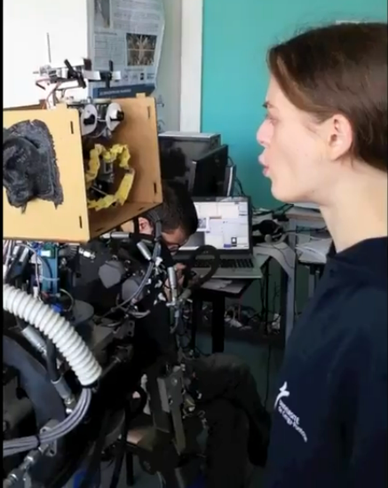
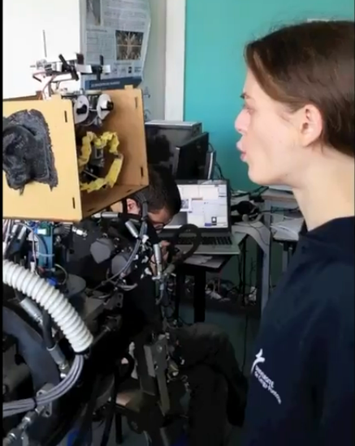
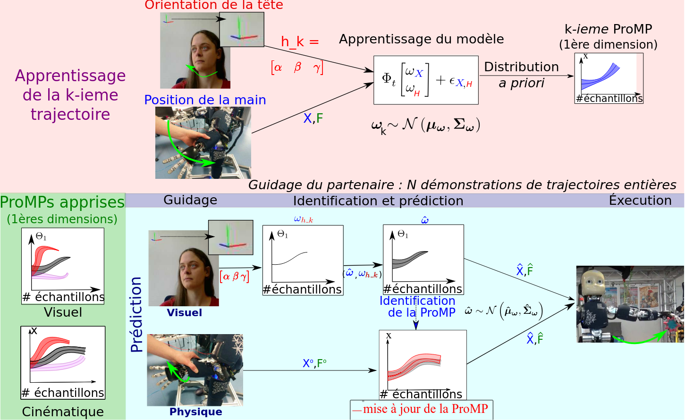

À propos
Enseignante-chercheuse spécialisée dans la modélisation et la prédiction du mouvement, dans le cadre d'interaction physique humain-robot.
Publications
Modélisation du comportement numérique des étudiants
- A dynamic indicator to model students’ digital behavior, Computer Supported Education, 2022.[video]
- Using Behavioral Primitives to Model Students’ Digital Behavior, Knowledge-Based and Intelligent Information and Engineering, 2022.[video]
- Can we take advantage of time-interval pattern mining to model students activity?, Educational Data Mining, 2020.[video]
Modélisation du mouvement humain pour la robotique collaborative
- Prediction of human whole-body movements with ae-promps, Humanoids, 2018.
La capacité de prédire les mouvements futurs prévus est essentielle pour que les robots collaboratifs puissent anticiper les actions humaines et pour que les technologies d’assistance puissent alerter lorsqu’un mouvement est non ergonomique et potentiellement dangereux pour la santé humaine. Dans cet article, nous abordons le problème de la prédiction des mouvements futurs du corps humain dans son ensemble à partir d’observations précoces. Nous proposons de prédire la continuation de trajectoires de grande dimension projetées dans un espace latent réduit, à l’aide d’autoencodeurs (AE). La prédiction repose sur une description probabiliste des primitives de mouvement (ProMPs) dans l’espace latent, ce qui réduit notablement le temps de calcul nécessaire à la prédiction et permet ainsi d’utiliser la méthode dans des applications en temps réel. Nous évaluons notre méthode, appelée AE-ProMPs, pour la prédiction de mouvements futurs issus d’un jeu de données comprenant 7 actions différentes réalisées par un humain, enregistrées à l’aide d’une combinaison portable de suivi de mouvement. - Multi-modal intention prediction with probabilistic movement primitives, Human Friendly Robotics, 2018.
Cet article propose une méthode de prédiction multi-modale de l’intention basée sur une description probabiliste des primitives de mouvement et des objectifs. Nous ciblons l’interaction dyadique entre un humain et un robot dans un scénario collaboratif. Le robot acquiert des modèles multi-modaux de primitives d’action collaborative contenant à la fois des indices de regard provenant du partenaire humain et des informations cinétiques sur les primitives de manipulation de son bras. Nous montrons que si le partenaire guide le robot grâce aux indices de regard, le robot reconnaît la primitive d’action visée même dans le cas d’actions ambiguës. De plus, cette connaissance préalable acquise par le regard améliore grandement la prédiction de la trajectoire future visée lors d’une interaction physique. Des résultats obtenus avec l’humanoïde iCub sont présentés et discutés.
Mots-clés : multi-modalité, primitives de mouvement probabilistes, interaction humain-robot, collaboration - Prediction of intention during interaction with iCub with probabilistic movement primitives, Frontiers in Robotics, 2017
Cet article décrit notre logiciel open source pour prédire l’intention d’un utilisateur interagissant physiquement avec le robot humanoïde iCub. Notre objectif est de permettre au robot d’inférer l’intention du partenaire humain durant la collaboration, en prédisant la trajectoire future visée : cette capacité est essentielle pour concevoir des comportements anticipatoires, cruciaux dans les scénarios de collaboration homme–robot tels que la co-manipulation, l’assemblage coopératif ou le transport. Nous proposons une approche permettant de doter l’iCub de capacités élémentaires de reconnaissance d’intention, fondée sur les Probabilistic Movement Primitives (ProMPs), une méthode polyvalente pour représenter, généraliser et reproduire des compétences motrices complexes. Le robot apprend un ensemble de primitives de mouvement à partir de plusieurs démonstrations fournies par l’humain via l’interaction physique. Pendant l’apprentissage, nous modélisons le scénario collaboratif en utilisant des démonstrations humaines. Lors de la reproduction de la tâche collaborative, nous utilisons les connaissances acquises pour reconnaître l’intention du partenaire humain. En utilisant quelques observations précoces de l’état du robot, nous pouvons non seulement inférer l’intention du partenaire, mais aussi compléter le mouvement, même si l’utilisateur interrompt l’interaction physique avec le robot. Nous évaluons notre approche en simulation et sur le robot réel iCub. En simulation, l’iCub est piloté par l’utilisateur à l’aide du dispositif haptique Geomagic Touch. Dans l’expérience sur le robot réel, nous interagissons directement avec l’iCub en saisissant et en guidant manuellement le bras du robot. Nous réalisons deux expériences sur le robot réel : l’une avec de simples trajectoires d’atteinte, et l’autre inspirée du tri collaboratif d’objets. Le logiciel implémentant notre approche est open source et disponible sur la plateforme GitHub. De plus, nous fournissons des tutoriels et des vidéos.
Mots-clés : robot, prédiction, intention, interaction, modèles probabilistes - The codyco project achievements and beyond: Toward human aware whole-body controllers for physical human robot interaction, Robotics and Automation Letters, 2017
Le succès des robots dans des environnements réels dépend en grande partie de leur capacité à interagir à la fois avec les humains et avec leur environnement. Le projet européen FP7 CoDyCo s’est concentré sur ce dernier défi en exploitant à la fois la dynamique des contacts rigides et des contacts souples dans le problème de contrôle du robot. Concernant le premier défi, pour gérer correctement la dynamique d’interaction du côté du contrôle du robot, il est nécessaire d’estimer les comportements et les intentions humaines. Dans ce papier, nous présentons les éléments constitutifs d’un tel contrôleur human-in-the-loop et les validons à la fois en simulation et sur le robot humanoïde iCub, dans un scénario d’interaction humain-robot. Dans ce scénario, un humain aide le robot à se relever après être assis sur un banc.
Mots-clés : interaction physique humain-robot, robots humanoïdes. - One-shot evaluation of the control interface of a robotic arm by non-experts, Social Robotics, 2016
Dans cet article, nous étudions la relation entre la performance d’utilisation et les préférences des utilisateurs pour une interface de contrôle d’un bras robotique. Nous nous intéressons aux préférences des utilisateurs non experts après une évaluation unique des interfaces sur une tâche test. Nous explorons également la possible relation entre la performance de l’utilisateur et certains facteurs individuels. Après une étude de groupe focalisé (focus group), nous avons choisi de comparer le joystick du bras robotique et une interface utilisateur graphique. Ensuite, nous avons étudié la performance des utilisateurs et l’évaluation subjective des interfaces lors d’une expérience avec le bras robotique Jaco et N = 23 adultes en bonne santé. Nos résultats préliminaires montrent que la préférence d’un utilisateur pour une interface particulière ne semble pas dépendre de sa performance dans son utilisation : par exemple, de nombreux utilisateurs ont exprimé leur préférence pour le joystick alors qu’ils obtenaient de meilleurs résultats avec l’interface graphique. Contrairement à nos attentes, ce résultat ne semble pas être lié aux facteurs individuels des utilisateurs que nous avons évalués, à savoir le désir de contrôle et l’attitude négative envers les robots.
Mots-clés : interfaces humain-robot, évaluation par les utilisateurs, facteurs individuels, non-experts - Developmental learning of audio-visual integration from facial gestures of a social robot (travaux de Master), HAL, 2015. [video_1],[video_2][video_3]
Cet article présente une architecture de réseau neuronal permettant à un robot de reconnaître des motifs de manière multimodale (auditive et visuelle) en suivant une approche développementale. Grâce à cette reconnaissance, le robot peut interagir socialement avec un partenaire (par le biais des expressions faciales), comme le ferait un nourrisson.
Pour permettre cette reconnaissance, un apprentissage est réalisé en explorant plusieurs associations perception-action à l’aide d’un apprentissage par renforcement auto-supervisé. Ce réseau permet un comportement d’imitation avec un partenaire, en utilisant la perception et la synchronisation pour relier les différentes modalités.
Nous montrons que le robot peut utiliser l’information redondante provenant des différentes modalités pour prendre des décisions. Par exemple, si un signal sensoriel n’est pas suffisamment efficace, l’autre compense. Nous démontrons que notre architecture est plus robuste que les architectures unimodales et fonctionne dans des environnements défavorables où de nombreuses personnes se déplacent et parlent en permanence.
Mots-clés : Réseaux de neuronnes, interaction humain-robot, robots humanoïdes, interaction multi-modales, apprentissage par imitation
Thèse
- Prédiction du mouvement humain pour la robotique collaborative : du geste accompagné au mouvement corps entier. Université de Lorraine, 2018 [video]

Cette thèse se situe à l’intersection de l’apprentissage automatique et de la robotique humanoïde, dans la thématique de l’interaction humain-robot, et dans le domaine de la cobotique (robotique collaborative). Elle se focalise sur les interactions non verbales humain-robot, en particulier sur l’interaction gestuelle. La prédiction de l’intention, la compréhension et la reproduction de gestes sont donc des questions centrales de cette thèse.
Dans un premier temps, il s’agit de faire apprendre au robot des gestes par démonstration : un utilisateur prend le robot par le bras et lui fait réaliser les gestes à apprendre et ce, plusieurs fois. Le robot doit ensuite être capable de reproduire ces différents mouvements tout en les généralisant pour s’adapter au contexte. Pour cela, à l’aide de ses capteurs proprioceptifs, il interprète les signaux perçus pour comprendre le mouvement que lui fait réaliser l’utilisateur, afin d’en générer des similaires par la suite. Dans un second temps, le robot apprend à reconnaître l’intention de l’humain avec lequel il interagit et cela, à partir des gestes que ce dernier initie : il s’agit ensuite pour le robot de produire les gestes adaptés à la situation et correspondant aux attentes de l’utilisateur. Cela nécessite que le robot comprenne la gestuelle de l’utilisateur. Pour cela, différentes modalités perceptives ont été explorées. À l’aide de capteurs proprioceptifs, le robot ressent les gestes de l’utilisateur au travers de son propre corps : il s’agit alors d’interaction physique humain-robot. À l’aide de capteurs visuels, le robot interprète le mouvement de la tête de l’utilisateur. Enfin, à l’aide de capteurs externes, le robot reconnaît et prédit le mouvement corps entier de l’utilisateur. Dans ce dernier cas, l’utilisateur porte lui-même des capteurs (vêtement X-Sens) qui transmettent sa posture au robot. De plus, le couplage de ces modalités a été étudié.
D’un point de vue méthodologique, nous venons de voir que les questions d’apprentissage et de reconnaissance de séries temporelles (les gestes) ont été centrales dans cette thèse. Pour cela, deux approches ont été développées. La première est fondée sur la modélisation statistique de primitives de mouvements (correspondant aux gestes) : les ProMPs. La seconde,ajoute à la première du Deep Learning, par l’utilisation d’auto-encodeurs, afin de modéliser des gestes corps entier contenant beaucoup d’informations, tout en permettant une prédiction en temps réel mou. Lors de cette thèse, différents enjeux ont notamment été pris en compte pour la création et le développement de nos méthodes. Ces enjeux concernent : la prédiction des durées des trajectoires, la réduction de la charge cognitive et motrice imposée à l’utilisateur, le besoin de rapidité (temps réel mou) et de précision dans les prédictions.
Mots-clés : Prédiction, primitives de mouvements, apprentissage automatique, Interaction humain-robot, cobotique.
Expériences
LCFC, Equipe Commande, Université de Lorraine, Metz, Maître de conférences, 2023 - maintenant
LORIA, Equipe Bird, Université de Lorraine, Nancy, Chercheuse Contractuelle, 2019 - 2023
INRIA, Equipe Larsen, Université de Lorraine, Nancy, Doctorat informatique, 2015 - 2018
Master Systèmes Intelligents et Communiquants, spé I.A. et robotique, Université de Cergy Pontoise (UCP), 2013 - 2015
Projets de recherche
En cours.
Enseignement
FST, Nancy
en cours.
IDMC, Nancy
en cours.
IUT informatique, Metz
en cours.
Encadrement
[Commence bientôt] Aide à l’apprentissage de gestes assistés par ordinateur. Stage de recherche, ENIM, 02/2025-07/2025
Sciences ouvertes
Initiation à la robotique avec le robot Thymio. Journées des sciences, Loria, 2018-2020
Contact
Email : oriane.dermy_at_univ-lorraine.fr